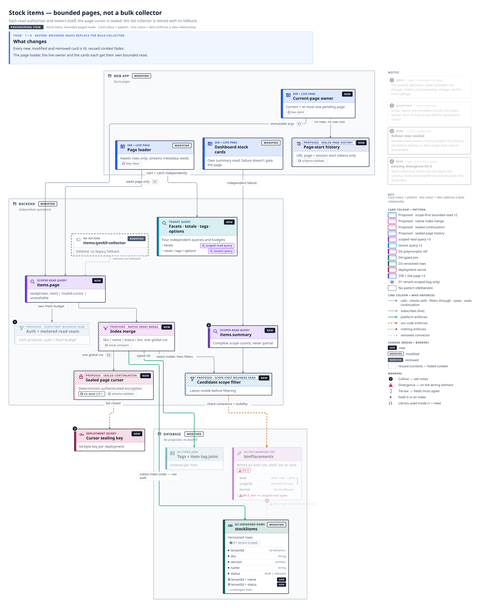
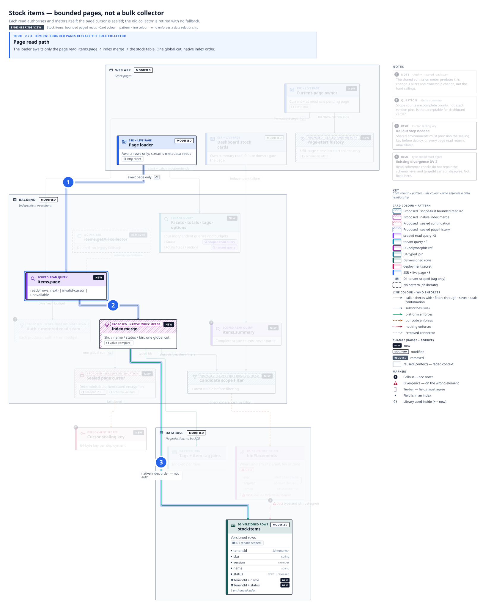
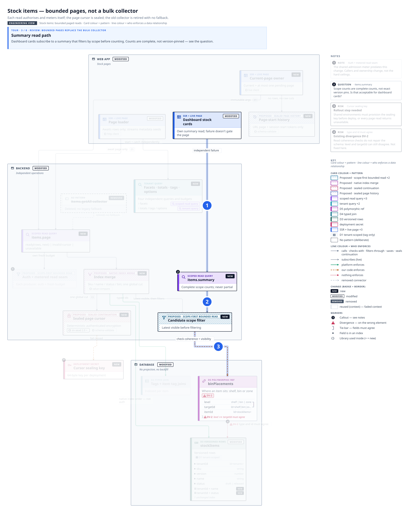
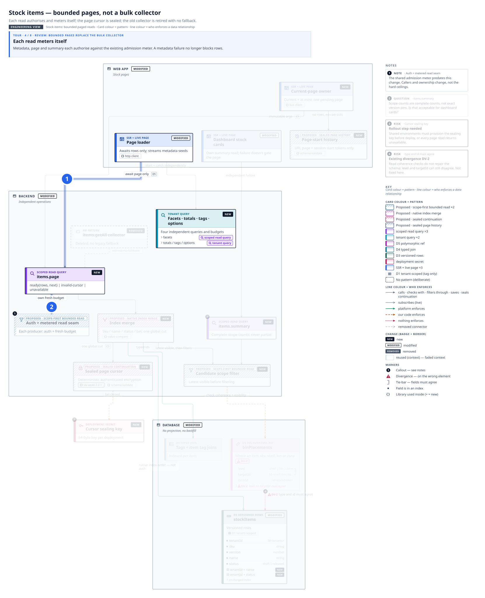
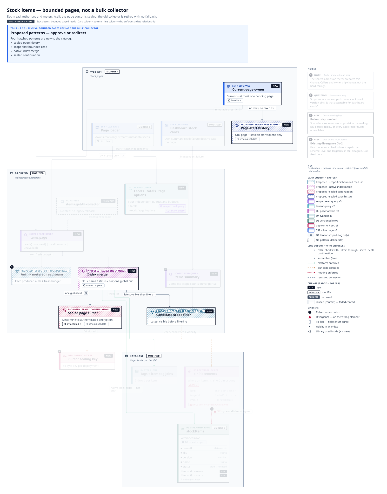
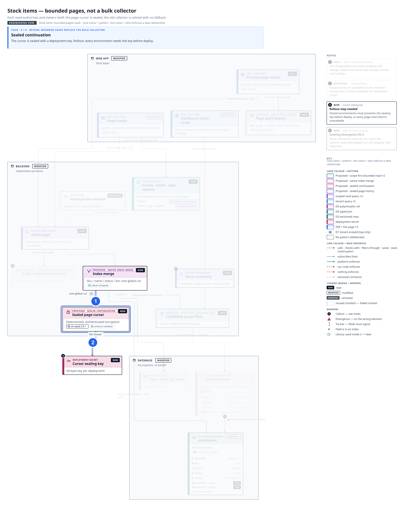
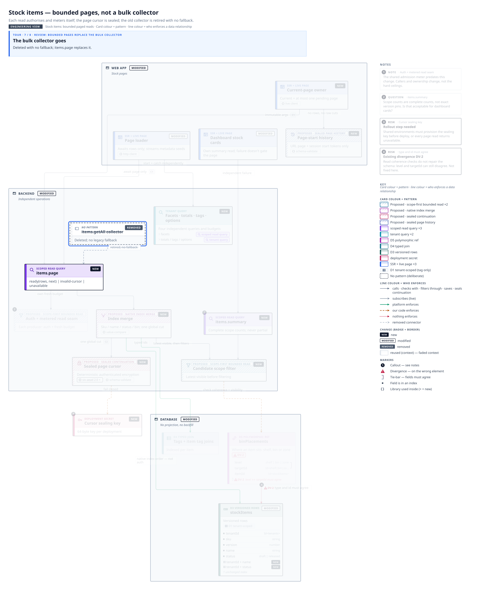
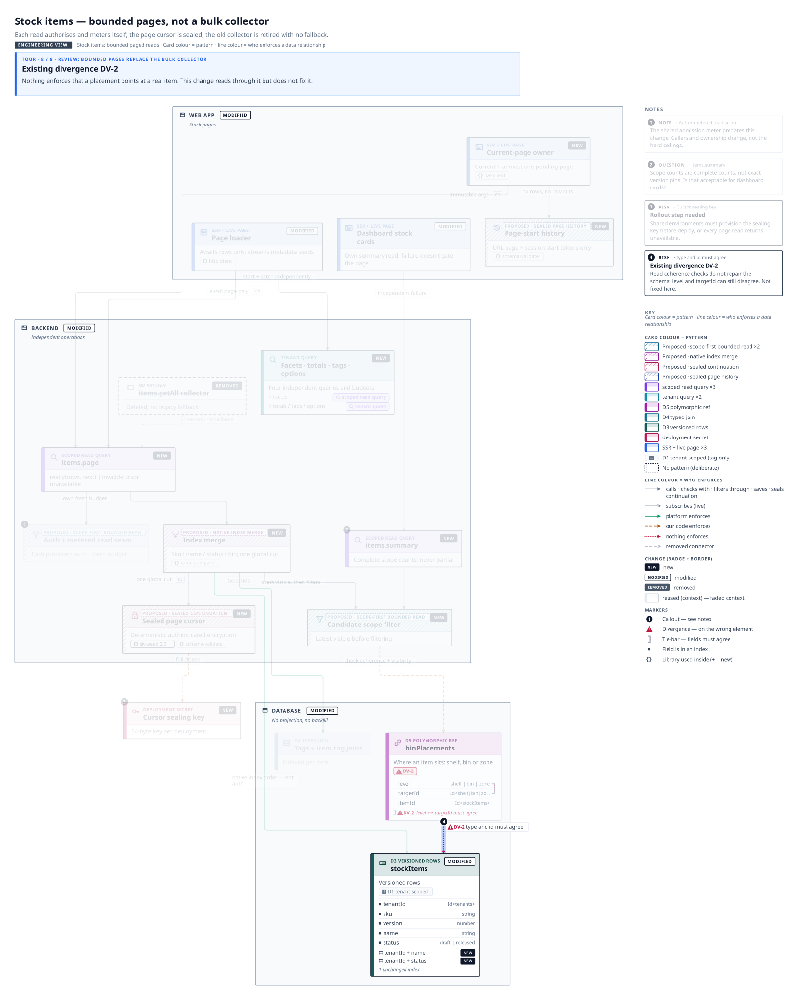

What changes
Every new, modified and removed card is lit; reused context fades.
The page loader, the live owner and the cards each get their own bounded read.

Page read path
The loader awaits only the page read: items.page → index merge → the stock table. One global cut, native index order.

Summary read path
Dashboard cards subscribe to a summary that filters by scope before counting. Counts are complete, not version-pinned — see the question.

Each read meters itself
Metadata, page and summary each authorise against the existing admission meter. A metadata failure no longer blocks rows.

Proposed patterns — approve or redirect
Four hatched patterns are new to the catalog:
- sealed page history
- scope-first bounded read
- native index merge
- sealed continuation

Sealed continuation
The cursor is sealed with a deployment key. Rollout: every environment needs the key before deploy.

The bulk collector goes
Deleted with no fallback; items.page replaces it.

Existing divergence DV-2
Nothing enforces that a placement points at a real item. This change reads through it but does not fix it.
